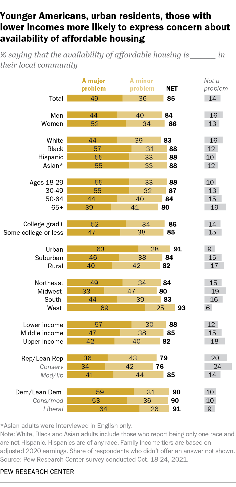
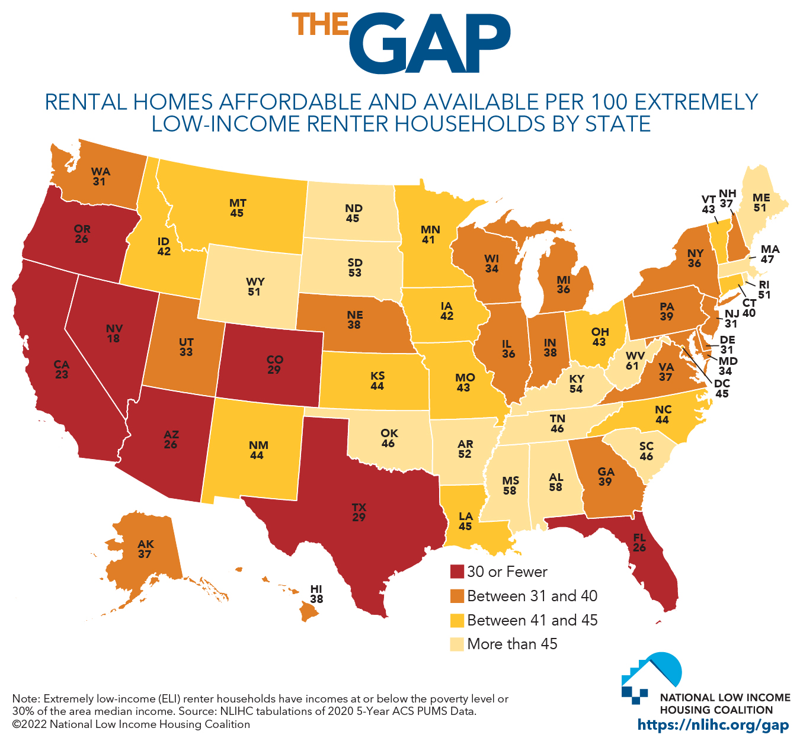

Home Affordability Gap
Home Prices Skyrocket, Hope Plummets
Problem?
A part of the American Dream is to own property, but for marginalized communities that is an uncompromising dream to achieve. With bank pre-approvals, down payments, credit scores, and more, low-income families find it extremely difficult to gain property they can call their own.
Nationally, there is an affordable housing crisis as a result of low government funding, low wages, increased gentrification, and more.
Data about my topic
Bar graph demonstrates that people from lower socioeconomic backgrounds are concerned with the scarity of affordable housing.
Where can this problem have lasting effects?
Homelessness and housing instability in America have surged as the cost of living has risen, putting a strain on underprivileged populations.
Where else can this problem have lasting effects?
Affordable housing issues today can be connected back to the post-World War II housing and family boom, which resulted in the new American norm of a nuclear family and living in suburban homes. As white families moved to identical-looking homes in the suburbs and gained more economic stability, marginalized communities were disproportionately denied access to these services, resulting in further segregation and undesirable living conditions.